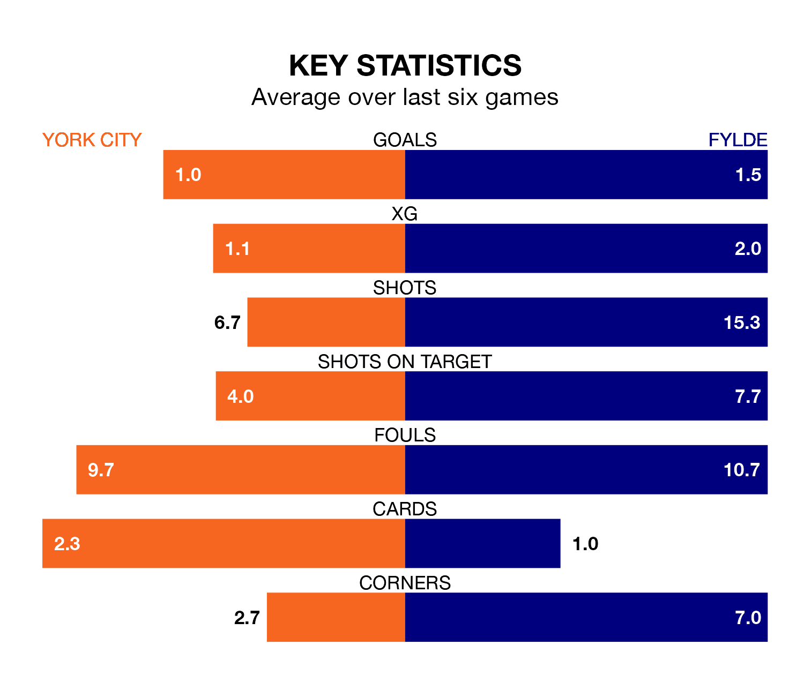

Struggling Fylde face York City away at the LNER Community Stadium on Saturday looking to build on a win in their last league outing.
After securing all three points with a 2-1 victory over Hartlepool United on January 9, the Coasters sit 22nd in National League.
They travel to play a York side 18th in the standings, who were held in their last match, 1-1 against Boreham Wood, on January 7.
With 36 goals in 27 games so far this season, York are scoring at below the league average rate with 1.3 goals per game. And they are conceding more than average, letting in 44 goals at a rate of 1.6 per game.
Fylde are also below average scorers, with 1.4 goals per game, compared to a league average of 1.5. They have conceded 1.9 goals per game.
In the last five years, York and Fylde have played each other on four occasions. York won three of them and Fylde one.
On average, York scored 1.8 goals and the Coasters 1.0 in those matches.
Their last meeting was on November 11, when York won 2-0 away.
City are in mixed form in National League, with one win and five draws from their last six games.
With two wins and two draws over that period, the Coasters's form is similar – they have both taken eight points from 18.
Updated: 10:02 (UTC), 19/01/24